You've now seen several different styles of event-handling in the programs we've looked at so far. For instance:
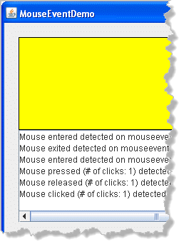
In your ACM programs, you added a singleaddMouseListeners()call to yourinit()method and then added your event-handler methods inside your program itself. You didn't have to explicitly implement an interface or connect your components to your event-handler methods, since the ACM superclass did that for you, behind the scenes.- In your Java applets, you've seen how to implement an interface
in the applet itself. When you do that, you add the necessary
implementsclause to the applet's header, "hook up" the event handling in itsinit()method, and finally, you override all of the event-handler methods declared in the interface, inside your applet code. - When you create discrete components, though, like you
did with the
Dotclass, the component itself can implement the interface. In this case, the event handling methods all appear inside the component (Dot) class, while the "wiring up" code appears inside the applets that use the component (TestDotsin this case). - Finally, you saw how you could create a new, top-level event-handler class that extends one of Java's event adapter classes. When you do this, the component that fires the events, the program class that uses the components, and the event-handler class that responds to events are all discrete, decoupled individual components.
There is one, additional way of handling events that you should know how to use, mainly because it is the most common way in the real world: through the use of inner classes.
What are Inner Classes?
Inner classes are nested classes that you define "inside" other classes. When you compile your program, Java combines the name of your outer (containing) class with the name of your inner class to create the actual "real" name of the class.
Here's an example:
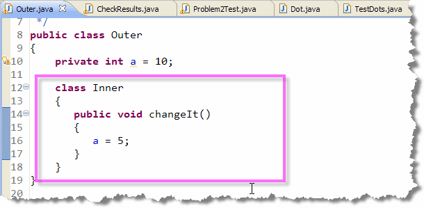
The outer class, here imaginatively namedOuter
contains only a single private int field named
a, as well as the definition for an inner class
named Inner. There are two important things to
note about this example:
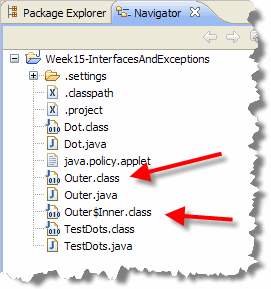
- The method
changeIt(), defined in the classInner, has access to theprivatedata fielda, while a subclass of theOuterclass would not. In this sense, inner classes act more like body parts than like relatives. - The example program creates no
Innerobject, it only contains a definition. To actually use the inner class you must also create anInnerobject.
When you compile this, as you can see here, you don't end up with files named Outer.class and Inner.class. Instead you have Outer.class and Outer$Inner.class. The main reason for using inner classes is to respond to events. By creating a separate inner class for each event you want to handle, your code is more modular.
To see how this is useful, let's return to our BeginnersBlackjack example, and hook up each of the buttons to respond to different clicks. As we do this, I'll show you three different styles of inner classes.
Hands-on ActionListeners
To create an event-handler class that responds to button clicks, you need to:
- Define an inner class inside the class that contains your buttons.
- Add
implements ActionListenerto the inner-class header. - Supply the methods that satisfy the
ActionListenerinterface contract. To do that you only need to supply a single method namedactionPerformed()that takes a singleActionEventparameter.
Of course, if you haven't already imported the java.awt.event
package, you'll need to do that as well.
The DealHand Event Handler
To see how this should work, let's add an event-handler class
to the BeginnersBlackjack program. Find the Exercise 8
marker (just before the main() method) and add the
skeleton for the DealHand event handler class, like
this:
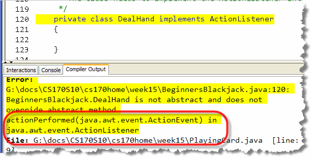
Of course, since we've promised that our class implements all of the methods in theActionListener interface,
but we actually haven't done that, DrJava complains when we compile.
Fortunately, along with the complaint, it also tells you exactly what
method you need to write. Just add the
actionPerformed() method to the inner-class,
passing it an ActionEvent parameter as the
error message suggests:
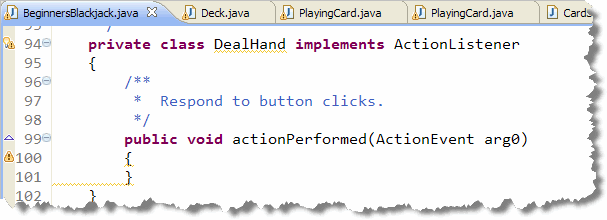
Step 2: Subscribing
Having an event-handler doesn't do a lot of good if it is
never called. To get it to work, we have to
hook-up the dealHand JButton so that
it calls the actionPerformed() method.
To do that, you have to:
- Create an instance of the
DealHandclass. - Then, call the
dealHandBtn'saddActionListener()method, passing in the newDealHandobject.
Scroll back down to BeginnersBlackjack's init()
method (where you were testing your code) and locate the
Exercise 9 placeholder. Hook-up your button there.
Your finished code should look like this:
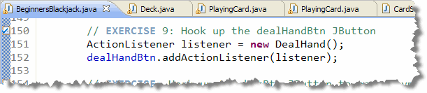
Now, whenever you click thedealHandBtn button,
it will call the actionPerformed() method inside
the object named listener that you've created here.
Step 3: Responding to the Event
Of course, the DealHand class doesn't actually
do anything inside its actionPerformed()
method. That's easy to fix, though.
- Cut (not Copy) this "test" code from your
init()method, and paste it inside theactionPerformed()method:
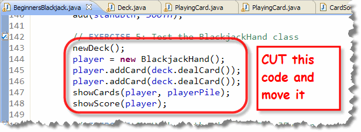
- Then, add an
ifstatement, so that you only create a new deck whenever there are fewer than two cards remaining, like this:
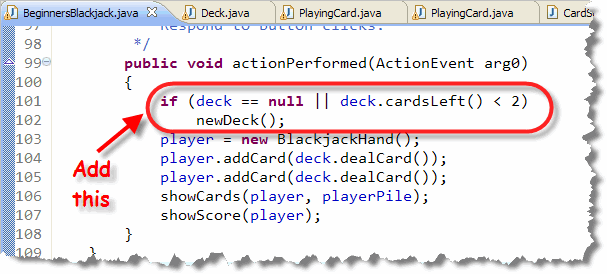
Now, you when your program runs, click the New Deal button,
and it will deal you a pair of cards and let you know your score.
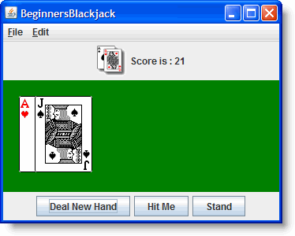
Try It Yourself
Deal a couple different hands. Make sure the score is correct each time.
Interlude: JButton Event Enabling
We're going to return to the topic of inner classes in a second, but before we do that, let's talk briefly about enabling and disabling buttons. By disabling a button when a particular event occurs, you can ensure that things happen in a certain order.
For instance, after you deal a hand of Blackjack:
- If the score is 21, then the player has won. There is no reason for the Hit or Stand buttons to be active. The only enabled button should be the Deal button for the next game.
- If the score is greater than 21, then the player has lost (busted) and hit and stand should also be off.
- If the score is less than 21, though, the player may want the dealer to supply more cards (Hit), or they may want to stick with the cards that they've been dealt (Stand). Both of those buttons should be active. The Deal button should be disabled, though, since the current hand isn't finished.
Let's implement this strategy by modifying the showScore()
method.
Step 1: Add Three Branches
We have three possibilities, so begin by using sequential
if statements like this:
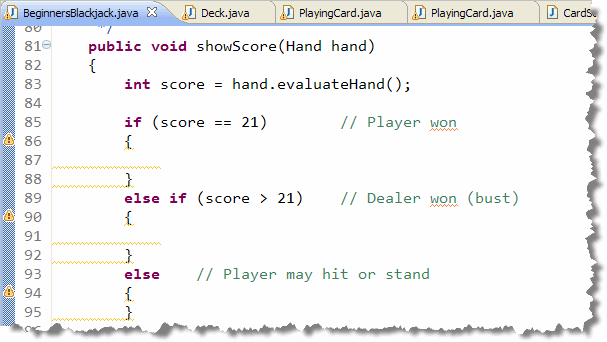
Step 2: The Buttons
Inside the first branch (where score == 21),
add the code to disable hitBtn and standBtn,
while enabling the dealHandBtn. Here's what
your code should look like:
Once you've finished this block of code, copy it exactly into
the other two blocks, but in the else block,
reverse each of the three boolean parameters.
Step 3: The Messages
The message displayed in the label is changed at the bottom of
the method. Cut that remaining line, and paste it three times
into each of the blocks. Then, modify the message that is
displayed so that it tells the user when they've won, lost,
or can continue playing. Here's what mine looks like:
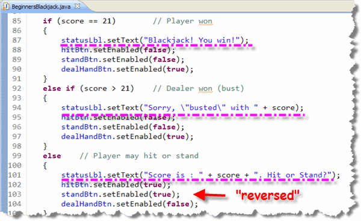
Run the program to make sure it works. Of course, since the Hit and Stand buttons aren't yet hooked up, you can't test that part of the code.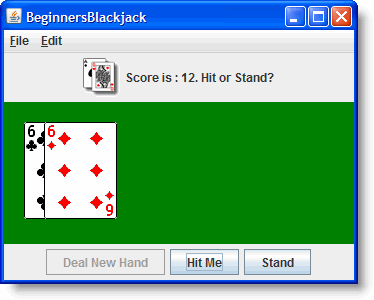
We'll take care of that shortly. But first, let's look at a couple of common variations on inner classes.Inner-Class Variations
There are two different variations on this basic inner-class
arrangement that are commonly used. It's important that you
recognize them, but remember that each of them does exactly the
same thing as the DealHand class you've just
seen; the inner classes are just arranged a little differently.
Variation 1: Anonymous Objects
Think about this for a second. Why do we "name" things like variables and methods in our programs? Well, really there are two reasons:
- Naming can make your program easier to understand. That's why named constants are always preferable to "magic numbers" in your code.
- Usually, though, we name things so that we can reuse the item in our program. For this purpose, methods are reusable snippets of code and variables are reusable data elements.
When you don't need to reuse an object in a different place in your program, you can avoid naming that object and simply create and use an anonymous object. This is really not much more efficient, but it does help you to avoid creating unneeded variable names.
Since we only use one DealHand object in our
program, instead of creating the variable named listener
and then passing it to the addActionListener() method,
you could simply create an anonymous DealHand()
object and pass that, instead:
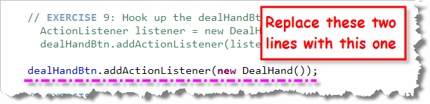
Variation 2: Anonymous Classes
This one is a little harder to grasp, because it's easy to get the syntax confused. The concept, though, is pretty straightforward.
In BeginnersBlackjack, the DealHand class
is only used to create a single object—the object passed to
addActionListener(). As you just saw, we really don't
need a variable name; an anonymous object works just fine.
If we take that logic a step further, though, you'll see that
you really don't need the class definition in any other
context either. When this is the case, Java allows you to
create an anonymous class at the same place you
created the anonymous object in the last example:
when you call addActionListener().
To understand this syntax, think of the original class definition
for the DealHand class shown here, with the
identifying information stripped out:
class DealHand implements ActionListener
{
public void actionPerformed(ActionEvent ae)
{
// action code here
}
}
Now, imagine that this definition is used to replace the
new DealHand() constructor in the anonymous variables
variation like this:
dealHandBtn.addActionListener(new DealHand/* insert here */());
The result is an anonymous class object that looks like this:
dealHandBtn.addActionListener(new ActionListener()
{
public void actionPerformed(ActionEvent ae)
{
// action code here
}
});
Note : Pay special attention to the last line. Note that it ends in a closing brace, followed by a closing parenthesis and a semicolon.
Hands-On: Anonymous Inner Class
To give you some practice, let's hook up an anonymous
inner-class event handler for the hitBtn.
Here's what you should do:
- In the
init()method, where you see the marker for Exercise 10, callhitBtn.addActionListener(l);, where the parameter "l" stands for "listener":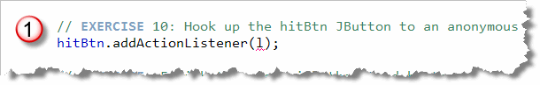
- Of course, this doesn't even compile, since
we haven't defined the listener object. Replace the "l"
with an
ActionListener()anonymous class withactionPerformed():
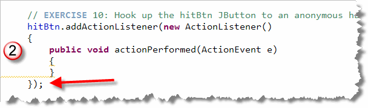
For the code inside the actionPerformed() method,
you can just copy the code from the DealHand class
and then modify it like this:
- If the deck has less than 1 card, call
newDeck() - Add the top card to the player's hand
- Pass
playerandplayerPiletoshowCards(), and theplayertoshowScore().
Here's what the finished code should look like. When you've done
this, run and make sure you can hit on a hand less than 21:
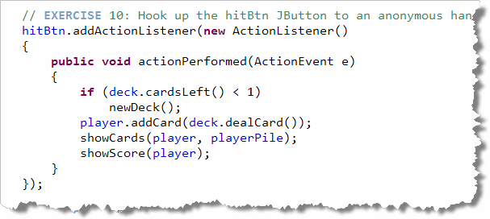
Try It Out
Deal a couple different hands. Make sure the score is correct each time and that you can now "hit" when the score is less than 21.
Should You?
Should you use anonymous inner classes? Many programmers like them because using anonymous classes makes their code slightly shorter, plus they don't have to think up "dummy" class names. Others feel that it makes it harder to follow the outline of the original program.
You'll have to decide for yourself. There's no doubt, however, that anonymous classes, unless used in moderation, make a program harder to read and understand.
Your Turn: Finishing the Game
Our BeginnersBlackjack game is almost finished. I'll let you do the final steps on your own. All you have to do is to hook up the Stand button.
Add an anonymous inner class event adapter where you
see the marker for Exercise 11. Inside it's
actionPerformed() method you'll add some code
that is very similar to the code in the other event handlers.
This time, though, you'll be working with the dealer's hand,
not the player's:
- Call
newDeck()if there are fewer than 2 cards. You don't have to check for anulldeck. - Create a new hand for the
dealer(instead of theplayer) and add two cards. - Use a loop to keep adding one card to the dealer's
hand while the dealer's score is less than or equal to
17. Make sure you call
newDeck()inside the loop if you run out of cards. - Display the dealers cards in the
dealerPile, just like you did with theplayerandplayerPile. - Call the
scoreGame()method, (which has already been written), passingdealerandplayeras arguments. (NOTE you will need to uncomment the method before you call it.)
Run the program and try it out. It should work fine except that
when you start a new game, you'll find the dealer's previous
hand still on the table. You can fix that little glitch by
adding this line to your DealHand event handler:
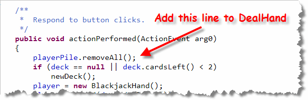

Inner Classes Summary
- Inner classes are defined inside of another class. An
inner class can access the instance variables (including
privateinstance variables) of its enclosing class. - When you compile a program with inner classes, the compiler
automatically names the resulting class. A named inner
class is given the name
Outer$Inner.class, (where Outer and Inner are replaced with the respective names). Anonymous inner classes are namedOuter$1.class,Outer$2.classand so on. - To use inner classes to respond to events, just create a class
that implements one of the event-handling interfaces, (or,
more commonly, that extends one of the event adapters),
create an instance of your event-handler class and then
connect the appropriate component (a
JButtonfor instance) to the event-handler object. - Since you will often have only once copy of an event-handler class, you may skip creating an instance variable for the class and simply create an anonymous object when you hook up your class.
- If you like, instead of defining a named class, you can place the anonymous class definition inline when you call the method that connects your component to its event handler.